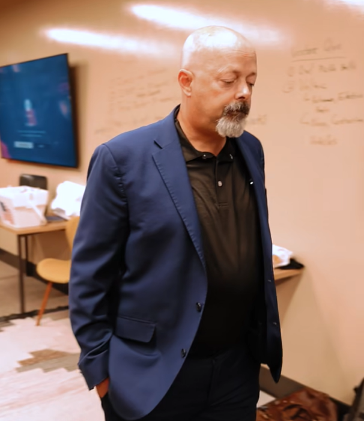

We are not passive capital
ZAMP Funds invests in ambitious founders pursuing breakthrough opportunities where innovation can reshape entire markets. We look for founders with urgency, conviction, and the ability to turn bold ideas into durable companies.

FounderFounder
“We were cash flow positive on day one. We're all in on AI, autonomy, and robots.”
In the AI space, ZAMP holds 40 patents, and its hedge fund is built on a prediction engine — one of the most accurate on the planet. On the venture side, the first three home runs returned about 500x, 300x, and 100x. The criteria is simple: where can we make the greatest return?
Thesis
A long-term play, plainly stated
Venture isn't the stock market, or betting on any activity — it's a long-term play. Not a three-month or three-day thing, but a three-, five-, seven-, even ten-to-fifteen-year play. Our investors are sophisticated and mature; they understand they don't have the liquidity of the stock market or cash. If an investor doesn't understand that limited liquidity, it probably doesn't make sense for us to work together.
Focus
The same focus, unchanged
From our perspective nothing has really changed — the same focus around the technologies defining the next decade.